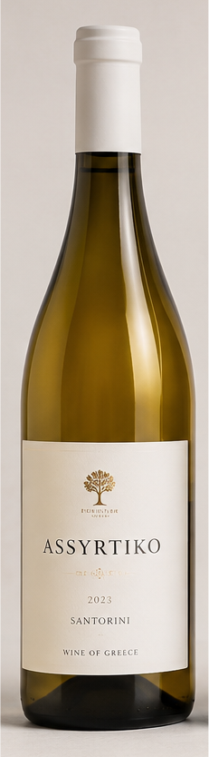
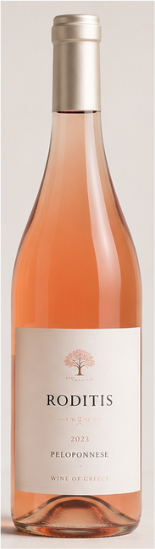
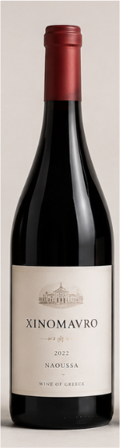
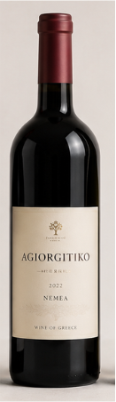
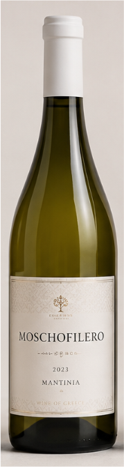
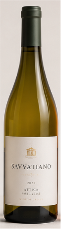

Ασσύρτικο
Λευκό, ξηρό κρασί με έντονη οξύτητα και αρώματα εσπεριδοειδών και λευκών λουλουδιών.

Ροδίτης
Ροζέ, δροσερό κρασί με αρώματα ροδάκινου, λεμονιού και διακριτικές νότες βοτάνων.

Ξινόμαυρο
Κόκκινο, ξηρό κρασί με δυναμικό χαρακτήρα, αρώματα κόκκινων φρούτων και νότες μπαχαρικών

Αγιωργίτικο
Απαλό, φρουτώδες κρασί με αρώματα δαμάσκηνου, κερασιού και γλυκών μπαχαρικών.

Μοσχοφίλερο
Αρωματικό λευκό κρασί με νότες τριαντάφυλλου, εσπεριδοειδών και λευκού μοσχοκάρυδου

Σαββατιανό
Κρασί με απαλό χρώμα, χαμηλή οξύτητα και γεύσεις που θυμίζουν πράσινο μήλο, λεμόνι και διακριτικές νότες λουλουδιών.